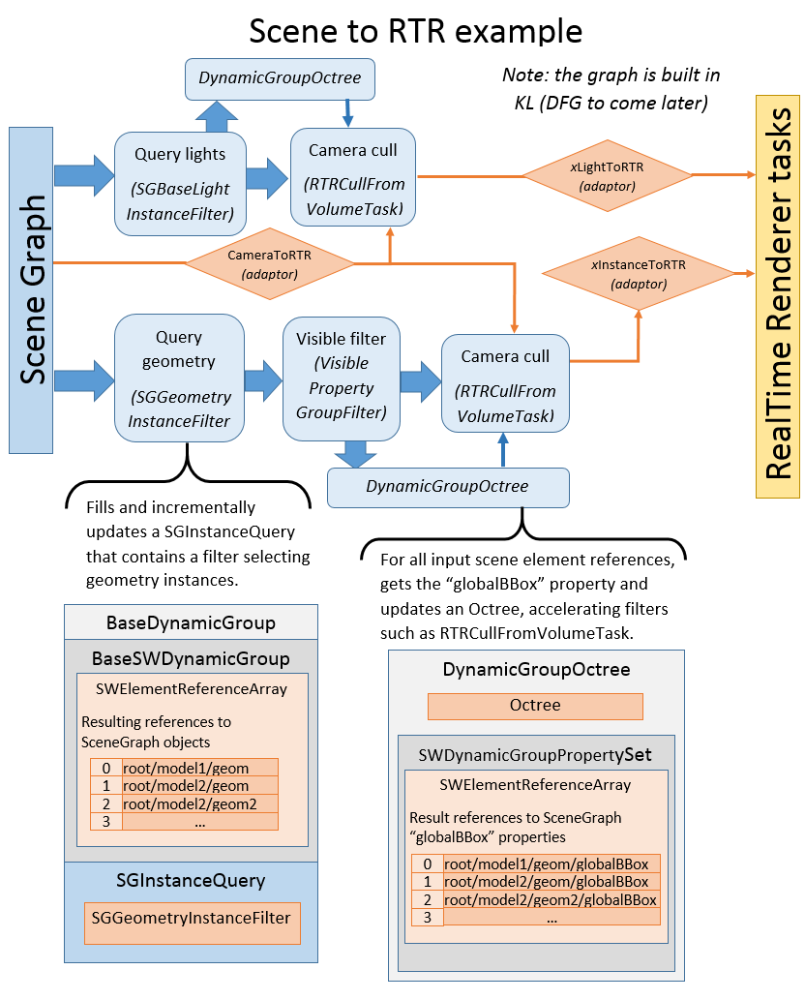

Scene Assembly¶
The scene assembly is the procedural scene processing portion of the SceneHub. It consist of a processing graph containing nodes that query, filter, merge or augment scene element groups. It includes, too, a set of interfaces for abstracting the scene implementation while allowing for efficient, asynchronous processing, which is implemented by the SceneGraph.
警告
The SceneAssembly extension is in early development stages and will grow in the next releases. In particular, there is currently no support for visual creation of processing graphs (DFG) however this is planned for future releases.
The following objects and interfaces constitute the main building blocs of the scene assembly framework:
The
SceneWrapperinterface is the main interface for abstracting a source scene (such as the SceneGraph). It allows to create generic evaluation contexts (SWContext), queries and reference arrays.The
SWElementReferencerefers to a scene element or sub-property. By implementing support for these, the scene provides an abstraction of its elements that allows for efficient and generic processing.SWElementReference‘s methods allow for generic functionality such as:- Get its type and value
- Request
SWElementReferencefor sub-properties (eg: globalTransform) - Get its full name (mostly for debug purpose)
- Ability to update or generate its value for a specific scene context (
SWContext, eg: for a specific frame) and provides a value version which allows clients to asynchronously detect changes. - Attach an adaptor for a specific target (eg: OpenGL/RealTimeRenderer adaptor). The adaptor will be attached to scene’s source element (share by all SWElementReference that refer to the same scene element)
注釈
The
SWElementReferenceis a simple struct that is an accessor for a specifc indexedSWElementReferenceArrayitem. It basically wraps a [elementsArray, index] pair, which simplifies its usage while maintaining regrouped element allocation for better performance and memory usage.The
BaseDynamicGroupis the base class for scene assembly processing nodes. It allows to collect an indexed set of scene items, provides information for updating ouput groups asynchronously and maintains a link to items’ source groups (access to theirSWElementReference). TheBaseDynamicGroupis optimized for efficiency and low memory usage.
The connected scene assembly nodes form a procedural scene processing graph.
All nodes implement an update method which takes a SWContext.
The nodes recursively call update on their input group before
updating their state and data. Nodes themselve have a version
(Versioned interface), which allows connected groups
to detect if their data changed.
The provided nodes and data include the following:
SWDynamicGroup: an initial group providing a set of sourceSWElementReference. TheSceneWrapper.createInstanceQuerymethod allows to createSWDynamicGroupcontaining the result of a scene query.The
BaseDynamicGroupFilterbase object provides services for creating a filtered subset of an inputBaseDynamicGroup.The
DynamicGroupVolumeFilterfilter node will select scene elements based on their bounding box (globalBBox property) and a specified volume query. For a better performance, it uses aDynamicGroupOctreewhich can incrementally updates an Octree of the input scene elements. TheRTRCullFromVolumeTaskis a specialization of theDynamicGroupVolumeFilterfor culling scene elements based on camera’s volume.警告
The set of provided processing or filtering nodes at this point is pretty limited, for example these don’t include nodes to “merge” multiple scenes together. Additionally, DFG support for the assembly graph is planned but hasn’t been realized at this point.
SceneAssembly example: SceneGraph to RTR¶
Below is illustrated a simple scene processing graph for providing culled geometries and lights to the RealTime Renderer:
In the diagram above:
- The “Query geometry” and “Query lights” nodes are
SceneGraphspecific implementations ofSWDynamicGroupelement queries (SGInstanceQuery) which are embedding different specialized scene element filters (SGGeometryInstanceFilterandSGBaseLightInstanceFilter). - The geometry group is then filtered based on a “visible” property using the
VisiblePropertyGroupFilter - The light and geometry groups are filtered based on the
RTRCameravolume, which is aDynamicGroupVolumeFilterspecialized for the RealTime Renderer. A SceneGraph to RTR adaptor allows to adapt SceneGraph’sSGCamerato the RTR-specializedRTRCamera. - Finally, RTR-specific adaptors are created for the resulting scene geometry instances and lights.
These adaptors allow to map scene-specific types, such as
SGDirectionalLightandSGInstance, to corresponding RTR objects, such asRTRDirectionalLightandRTRSWInstance. See Scene element adaptors for more details about the adaptor mechanism.